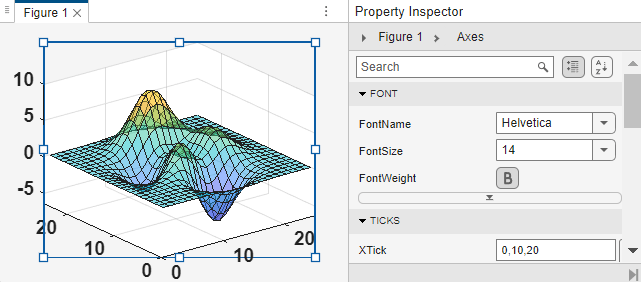

Property Inspector
Open Property Inspector
Description
The Property Inspector enables you to interactively modify objects, such as graphics objects. When you select an object, the Property Inspector shows a list of object properties. You can change property values by editing the fields that appear next to each property name.
Open the Property Inspector
Figure: On the Format tab of the figure, in the Enable section, enable plot edit mode by clicking Select & Plot Edit. Then, in the Inspect section, click More Properties.
MATLAB® command prompt: Enter
inspect.
Examples
Use the Property Inspector to change the transparency of a surface plot and to change the font size of the axes text.
Create a surface plot and open the Property Inspector. Then, view the
surface properties in the Property Inspector by clicking the surface. Use
the inspect function to enable plot edit mode and open
the Property Inspector.
surf(peaks(25)) inspect

Change the value of the FaceAlpha property to
0.5. The surface plot updates so that it is
semitransparent.
Then, select the axes. To select the axes, you can click the axes directly
in the figure or you can expand the first line labeled Figure 1 >
Axes in the Property Inspector and select the axes object
from the tree. Then, change the value of the FontSize
property to 14 and the FontWeight
property to bold.

Programmatic Use
Version History
Introduced before R2006a